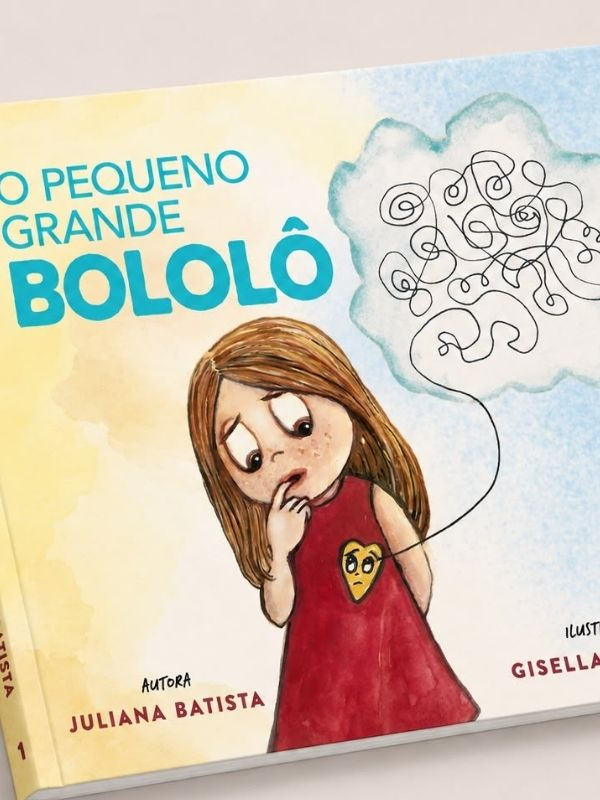
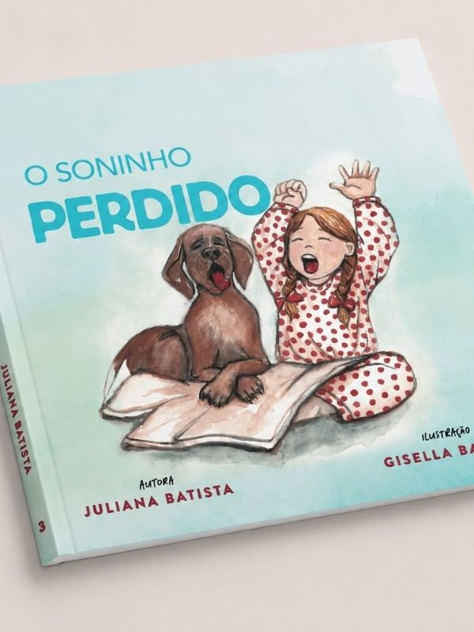

Conheça os Livros da Coleção
Cada obra foi pensada para acolher um desafio emocional específico da infância.

O Pequeno Grande Bololô
Quando as ideias e sentimentos se misturam e parecem um nó difícil de desatar no peito, a personagem descobre, junto com sua mãe, a grande resolução para a sua confusão interna. Um livro essencial sobre ansiedade, angústia e regulação emocional.
[ Player do Vídeo: Juliana explicando "O Pequeno Grande Bololô" ]
Para Sempre Em Nós
Acolhe a dor da perda e da saudade. Com um olhar técnico e amoroso, a obra mostra como a gratidão pelos dias vividos e o amor permanecem vivos no coração, consolando crianças e adultos diante do luto.
[ Player do Vídeo: Juliana explicando "Para Sempre Em Nós" ]


O Soninho Perdido
Inspirado na cadelinha Ema, o livro ensina de forma lúdica a desacelerar a mente cheia de estímulos na hora de dormir. Uma leitura que reensina a criança e a família a soltarem o peso do dia e encontrarem a paz do descanso.
[ Player do Vídeo: Juliana explicando "O Soninho Perdido" ]